In this chapter, we will write our first messaging client: a native application running on an iPhone. We will use STOMP to send and receive messages using the Objective-C library StompKit.
In #ch_introduction_stomp_example, we described the Locations application. In this chapter, we will write the iOS application that broadcasts the device’s position and receives text messages ().
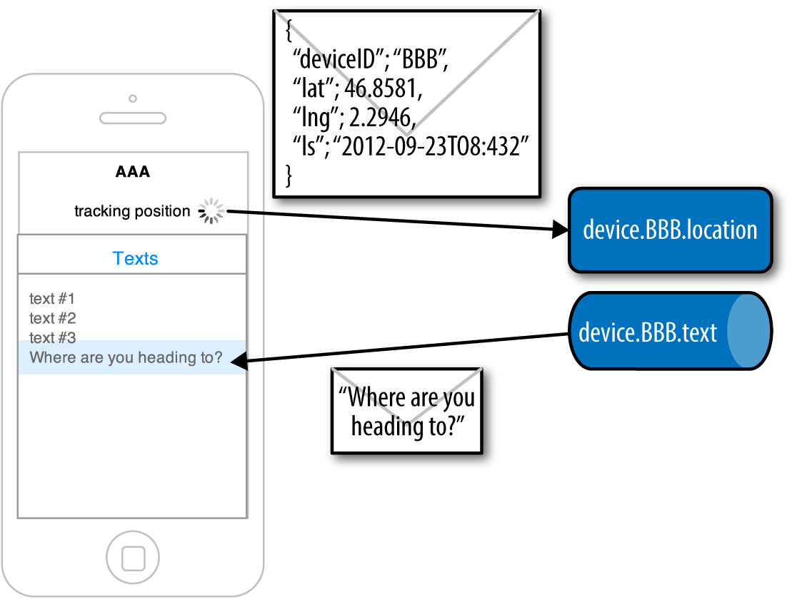
Diagram of the Locations iOS application
Throughout the chapter, we will show all the code required to run the application.
The whole application code can be retrieved from the GitHub repository in the stomp/ios/ directory.
StompKit
To use STOMP on iOS, we will use the StompKit Objective-C library that implements the STOMP protocol in a modern, event-driven way using ARC, Grand Central Dispatch, and blocks.
The source code of this library project is hosted on GitHub.
Create the Locations Project with Xcode
We will use Xcode to create the Locations iOS application.
When Xcode is installed and started, we create a new project from its launch screen, as illustrated in :
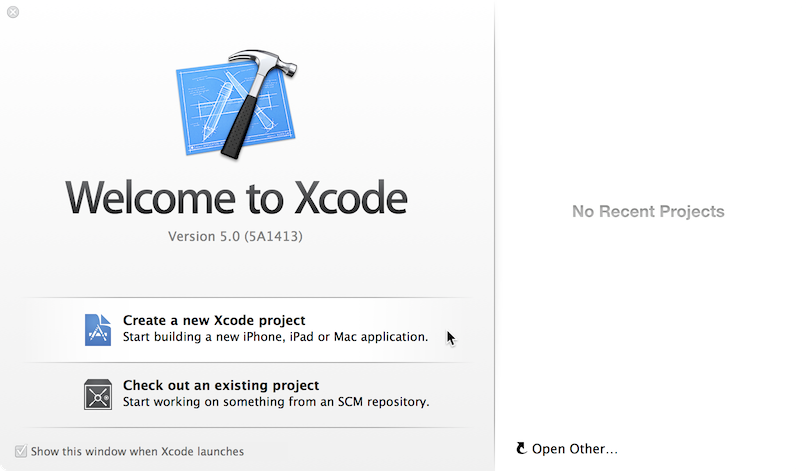
Select "Create a new Xcode project" from the Xcode launch screen
The application consists of a single view, so we choose the Single View Application template in iOs → Application from the template screen, as illustrated in .
Select Single View Application from the template screen
We will call the project Locations and select to build it only for iPhone devices, as illustrated in .
XCode project options screen
Finally, we will save it in a folder on our machine.
Create the Podfile
To import the library that we will use to send and receive messages, we will set up the project to use CocoaPods, an Objective-C Library Manager.
First, we need to close Xcode, because we will modify the project structure to import our dependencies.
After installing CocoaPods by following the instructions on its website, we create a file named Podfile at the root of the project (in the same directory as Locations.xcodeproj):
xcodeproj 'Locations.xcodeproj'
pod 'StompKit', '~> 0.1'
platform :ios, '5.0'
After saving this file, run the pod install command:
$ pod install
Analyzing dependencies
Downloading dependencies
Installing CocoaAsyncSocket (7.3.2)
Installing StompKit (0.1.0)
Generating Pods project
Integrating client project
[!] From now on use `Locations.xcworkspace`.
We can now open Xcode again, but we must do it using the workspace file named Locations.xcworkspace, and not the project file named Locations.xcodeproj ().
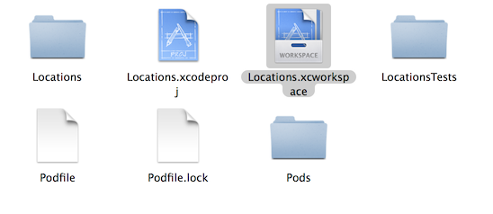
Open the Workspace file
First, we will verify that the project is set up correctly and that the application can run in the iOS simulator.
We will simulate the latest iPhone devices by selecting Product → Destination → iPhone Retina (4-inch 64-bit) from the Xcode menu bar.
If we run the application by selecting Product → Run (or pressing ⌘+R), the iOS simulator starts and opens the application, which is composed of a blank view ().
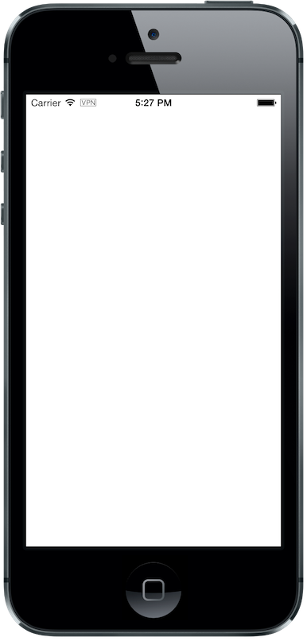
Blank view of the Locations application
Nothing is displayed, but it confirms that the project and its dependencies are successfully compiled and launched.
Identify the Device
The iPhone device will broadcast its position. The first thing to do is identify the device. To keep the example simple, we will use a universal unique identifier (or UUID) as the device identifier and display it in the view.
Because the application will run only on iPhone devices, the entire user interface will be set up in the Main.storyboard file.
Click on Main.storyboard to open it. From the Object library, drag a Label on the View's window. Place it at the top of the view and change the text to "Device ID," as illustrated in .
Add the Device ID label
I will not describe in detail how to set up the layout constraints for the graphical objects so that they adapt correctly to the device’s size and orientation.
However, the example code in the GitHib repository is constrained correctly.
The UUID that we will generate is quite long, so we will change its appearance by setting its Font to System 13.0 and its Alignment to centered to fit the screen, as illustrated in .
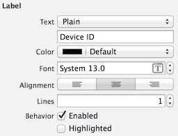
Change the appearance of the device ID label
We will connect this label to the MWMViewController object.
Add the necessary outlet property in the MWMViewController private interface in MWMViewController.m and an NSString to hold the identifier:
Open the Main.storyboard and Ctrl-click on View Controller to see its connection panel. Drag from deviceIDLabel to the UILabel to connect it. See .
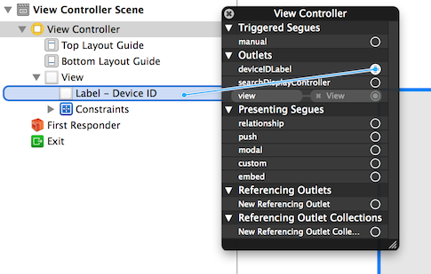
Connect the deviceIDLabel outlet property to the Device ID UILabel
Now that the outlet property is connected to the label, we need to generate a UUID for the application and display it when the view appears.
Open the MWMViewController.m file to add code to the MWMViewController implementation. When the application starts and the view is loaded in viewDidLoad, we set the deviceID using a UUID:
The identifierForVendor property will uniquely identify the device for the application’s vendor (that we set to net.mobile-web-messaging when we created the project).
We also need to set the label to this ID when the view appears:
If we run the application, we will see the device ID displayed instead of Device ID in the view ().
Display the device ID
Now that we have the identifier of the device, the next step is to retrieve its geolocation data using the CoreLocation framework before we can send them in a STOMP message.
The following sections deal with setting up the framework and writing code to retrieve the GPS data from the device and display it. This is unrelated to messaging, and you can skip these sections if you only want to know how to send and receive messages. Still, I thought the messaging code would be more meaningful if it were using real data instead of generating random dummy data. By using GPS data instead, we will be able to build a mobile application that displays this data on a map in the next chapter.
Display the Device Position
We will retrieve the geolocation data from the device’s GPS sensor to send them using STOMP messages. However, we also want to have some graphical feedback to show that the data changes over time as we move with our device.
To display the geolocation data, we will add a UILabel to the view and change its text to "Current position: ???" ().
Add the current position label
We will change its appearance to match the deviceID label by setting its Font to System 13.0 and its Alignment to centered ().
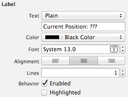
Change the appearance of the current position label
Open the MWMViewController.m file and add a property to the MWMViewController private interface:
We then bind this property to the label. Open the Main.storyboard and Ctrl-click on View Controller to see its connection panel. Drag from currentPositionLabel to the label to connect it. See .
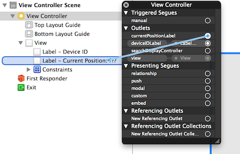
Connect the currentPositionLabel outlet property to the Current Position UILabel
The label is now connected to the property. The next step is to retrieve the geolocation data from the device to update this property and send a STOMP message with them.
Access the Device Geolocation Data with CoreLocation Framework
iOS provides the CoreLocation framework to access the location data.
We need to add it to the libraries linked by the application. Click on the Locations project and then the Locations target. In the General tab, under the Linked Frameworks and Libraries section, click on the + button. In the selection window, type CoreLocation, select the CoreLocation.framework, and click on the Add button ().
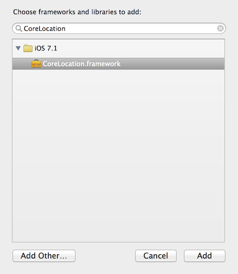
Add the CoreLocation framework
We can now use the CoreLocation framework by importing CoreLocation/CoreLocation.h at the top of the MWMViewController.m file.
We will make the MWMViewController private interface conform to the CLLocationManagerDelegate protocol and declare a CLLocationManager property named locationManager:
We will define two methods to start and stop updating the current location. When the app starts updating the current location in startUpdatingCurrentLocation, it creates the locationManager if it is not already created and designates the controller as the locationManager’s delegate. Because the geolocation data will be used to follow the device as it moves, we set the locationManager’s desiredAccuracy to kCLLocationAccuracyBestForNavigation.
Finally, the application will start listening for the device location by calling locationManager’s startUpdatingLocation method:
#pragma mark - CoreLocation actions
- (void)startUpdatingCurrentLocation
{
NSLog(@"startUpdatingCurrentLocation");
// if location services are restricted, do nothing
if ([CLLocationManager authorizationStatus] ==
kCLAuthorizationStatusDenied ||
[CLLocationManager authorizationStatus] ==
kCLAuthorizationStatusRestricted) {
return;
}
// if locationManager does not currently exist, create it
if (!self.locationManager) {
self.locationManager = [[CLLocationManager alloc] init];
// set its delegate to self
self.locationManager.delegate = self;
// use the accuracy best suite for navigation
self.locationManager.desiredAccuracy = kCLLocationAccuracyBestForNavigation;
}
// start updating the location
[self.locationManager startUpdatingLocation];
}
To stop receiving the device location in stopUpdatingCurrentLocation, we simply call locationManager’s stopUpdatingLocation method:
The location of the device will be received by the designated CLLocationManagerDelegate (in our case, the MWMViewController implementation itself). We need to implement the locationManager:didUpdateToLocation:fromLocation: method and extract the coordinates from the newLocation's coordinate.
After we have them, we can update the currentPositionLabel's text to display them:
#pragma mark - CLLocationManagerDelegate protocol
- (void)locationManager:(CLLocationManager *)manager
didUpdateToLocation:(CLLocation *)newLocation
fromLocation:(CLLocation *)oldLocation
{
// ignore if the location is older than 30s
if (fabs([newLocation.timestamp timeIntervalSinceDate:[NSDate date]]) > 30) {
return;
}
CLLocationCoordinate2D coord = [newLocation coordinate];
self.currentPositionLabel.text = [NSString stringWithFormat:@"φ:%.4F, λ:%.4F", coord.latitude, coord.longitude];
}
If there is any problem with the locationManager, we want to warn the user about it and stop updating the location. To do so, we implement the CLLocationManagerDelegate's locationManager:didFailWithError: method to display a warning to the user:
- (void)locationManager:(CLLocationManager *)manager
didFailWithError:(NSError *)error
{
// reset the current position label
self.currentPositionLabel.text = @"Current position: ???";
// show the error alert
UIAlertView *alert = [[UIAlertView alloc] init];
alert.title = @"Error obtaining location";
alert.message = [error localizedDescription];
[alert addButtonWithTitle:@"OK"];
[alert show];
}
Now that the code related to CoreLocation is in place, we just need to call the startUpdatingCurrentLocation method when the view appears:
The first time the application asks the locationManager to start updating the device location, the user will see an alert view asking for permission to access the device location ().
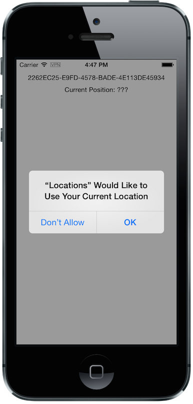
Permission to use the current location
If the user taps OK, the locationManager will start updating the device location and the label for its current position will be updated with the latitude and longitude ().
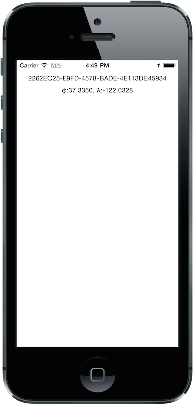
Display the current position of the device
Simulate a Location with iOS Simulator
If you are running the application on an iPhone device, the real geolocation data from the device will be used.If you run the application using the iOS Simulator, you can simulate different locations in the Debug → Location menu. For example, the Freeway Drive option will simulate a car driving on a freeway between Palo Alto and San Francisco.
Whether you are running the application on a device or in the simulator, you should see the currentPositionLabel be updated. The latitude and longitude numbers are difficult to interpret as such, but in #ch_web_stomp we will use them to draw the position on a map to locate the devices.
Now that the Locations application is handling the device geolocation data, the next step is to send them using STOMP.
Create a STOMP Client with StompKit
Before sending any messages, we must first import the StompKit library that we added to the Podfile file at the beginning of this chapter.
We must import its header file StompKit.h at the top of the MWMViewController.m file and add a STOMPClient property named client to the MWMViewController private interface:
The client property will be used to communicate with the STOMP broker after it is created and connected.
We do not need to conform to any protocol to use StompKit, as its API is based on blocks instead of protocol delegates.
The client variable is created when the controller’s view is loaded in MWMViewController's viewDidLoad method implementation. To create it, we need to pass the host and port of the STOMP broker to connect to. This information depends on the broker you are using. If you have configured ActiveMQ on your machine as described in #appendix_activemq, you will be able to connect on its 61613 port.
The host will depend on your network configuration. On my local network, my server has the IP address 192.168.1.25. I will use this value for the example, but you should replace this with your own server address to run the applications:
When the client object is created, it is not yet connected to the STOMP broker. To connect, we must call its connectWithHeaders:completionHandler: method.
StompKit uses Grand Central Dispatch and blocks to provide an event-driven API. This means that the client is not connected when the call to its connectWithHeaders:completionHandler: method returns but when the completionHandler block is called.
We can pass a dictionary to connectWithHeaders:completionHandler: to add additional headers during the connection to the STOMP broker. In our application, we will send a client-id header set to the deviceID to uniquely identify the client against the STOMP broker.
This ensures that no two devices will be able to connect using the same identifier. After a client is connected with a given client-id, any subsequent clients that use the same value will fail to connect to the broker.
We will encapsulate this code in a connect method in the MWMViewController implementation.
@implementation MWMViewController
#pragma mark - Messaging
- (void)connect
{
NSLog(@"Connecting...");
[self.client connectWithHeaders:@{ @"client-id": self.deviceID}
completionHandler:^(STOMPFrame *connectedFrame, NSError
*error) {
if (error) {
// We have not been able to connect to the broker.
// Let's log the error
NSLog(@"Error during connection: %@",
error);
} else {
// we are connected to the STOMP broker without an
error
NSLog(@"Connected");
}
}];
// when the method returns, we cannot assume that the client is connected
}
@end
We will call this connect method when the view appears in viewWillAppear:.
The STOMPClient disconnects from the broker using its disconnect: method. This method takes a block that will be called when the client is disconnected from the server. The block takes an NSError parameter that is set if there is an error during the disconnection operation.
#pragma mark - Messaging
- (void)disconnect
{
NSLog(@"Disconnecting...");
[self.client disconnect:^(NSError *error) {
if (error) {
NSLog(@"Error during disconnection: %@", error);
} else {
// the client is disconnected from the broker without any problem
NSLog(@"Disconnected");
}
}];
// when the method returns, we cannot assume that the client is disconnected
}
We will disconnect from the broker after the view has disappeared in viewDidDisappear:.
We now have a connection to the STOMP broker and receive the device’s geolocation data from the CoreLocation framework. The last step is to send this data to the topic associated to the device ID.
ActiveMQ convention is to prefix a STOMP destination with /topic/ to use a publish/subscribe messaging model and by /queue/ to use a point-to-point model.
We designed our application to use a topic for the device.XXX.location, so we must prefix it with /topic/.
As we described in #ch_introduction_stomp_example_message, the message representation is a JSON string that contains the location coordinates, the timestamp, and the device ID. We build an NSDictionary from this data and serialize it as a JSON string:
This body follows the JSON format. We will add a content-type header in the STOMP message and set it to application/json; charset=utf-8 to let the STOMP brokers and the eventual consumers know that this message’s payload can be read as a JSON string encoded with UTF-8. Without such a content-type, the consumers would not necessarily know how to read the data in the body and interpret it.
We now have the destination, headers, and body to send in the message. The last step is to use the client's sendTo:headers:body method to send it.
// send the message
[self.client sendTo:destination
headers:headers
body:body];
We will encapsulate all of these steps in a sendLocation: method that takes a CLLocation parameter.
- (void)sendLocation:(CLLocation *)location
{
// build a static NSDateFormatter to display the current date in ISO-8601
static NSDateFormatter *dateFormatter = nil;
static dispatch_once_t onceToken;
dispatch_once(&onceToken, ^{
dateFormatter = [[NSDateFormatter alloc] init];
dateFormatter.dateFormat = @"yyyy-MM-d'T'HH:mm:ssZZZZZ";
});
// send the message to the truck's topic
NSString *destination =
[NSString stringWithFormat:@"/topic/device.%@.location", self.deviceID];
// build a dictionary containing all the information to send
NSDictionary *dict = @{
@"deviceID": self.deviceID,
@"lat": [NSNumber numberWithDouble:location.coordinate.latitude],
@"lng": [NSNumber numberWithDouble:location.coordinate.longitude],
@"ts": [dateFormatter stringFromDate:location.timestamp]
};
// create a JSON string from this dictionary
NSData *data =
[NSJSONSerialization dataWithJSONObject:dict
options:0
error:nil];
NSString *body =[[NSString alloc]
initWithData:data
encoding:NSUTF8StringEncoding];
NSDictionary *headers = @{
@"content-type": @"application/json;charset=utf-8"
};
// send the message
[self.client sendTo:destination
headers:headers
body:body];
}
The next step is to call this method every time we receive an updated location in the locationManager:didUpdateToLocation:fromLocation: method.
- (void)locationManager:(CLLocationManager *)manager
didUpdateToLocation:(CLLocation *)newLocation
fromLocation:(CLLocation *)oldLocation
{
// ignore if the location is older than 30 seconds
if (fabs([newLocation.timestamp timeIntervalSinceDate:[NSDate date]]) > 30) {
return;
}
CLLocationCoordinate2D coord = [newLocation coordinate];
self.currentPositionLabel.text = [NSString stringWithFormat:@"φ:%.4F, λ:%.4F", coord.latitude, coord.longitude];
// send a message with the location data
[self sendLocation:newLocation];
}
Messages will be sent every time the device location changes. This is a bit inconvenient during development, as I do not want to move around my workspace whenever I need to update my location and send a message.
To simplify the development process, we will add code to send the last known location when the user shakes the device.
We will need to add a lastKnownLocation property to the MWMViewController private interface and use it to store the location returned by the CLLocationManager delegate method:
@interface MWMViewController () <CLLocationManagerDelegate>
...
@property (strong, nonatomic) CLLocation *lastKnownLocation;
@end
@implementation MWMViewController
...
#pragma mark - CLLocationManagerDelegate protocol
- (void)locationManager:(CLLocationManager *)manager
didUpdateToLocation:(CLLocation *)newLocation
fromLocation:(CLLocation *)oldLocation
{
...
// send a message with the location data
[self sendLocation:newLocation];
// store the location to send it again when user shakes the device
self.lastKnownLocation = newLocation;
}
To send a message with this lastKnownLocation when the user shakes the device, we must implement the motionEnded:withEvent: method in the MWMViewController implementation and check if the event is a motion shake (identified by UIEventSubtypeMotionShake):
#pragma mark - User Events
- (void)motionEnded:(UIEventSubtype)motion withEvent:(UIEvent *)event
{
if (motion == UIEventSubtypeMotionShake) {
NSLog(@"device is shaked");
if (self.lastKnownLocation) {
[self sendLocation:self.lastKnownLocation];
}
}
}
When we run the application, a STOMP message will be sent every time the location manager updates the device’s location or when the user shakes the device.
How can we check that messages are effectively sent?
We will confirm it at three different stages:
We will display the debug log on the device to check that messages are sent.
Next, we'll use the ActiveMQ administration console to check that it effectively handled the sent messages.
Finally, we will write the simplest STOMP consumer that can receive these messages.
Display StompKit Debug Log
Every time the StompKit library sends a message to a STOMP broker, it logs the STOMP frame that is sent.
To display them in the console, edit the file named StompKit.m in Xcode that is under the Pods project (its full path is Pods → Pods → StompKit → StompKit.m in the Project Navigator view) and change the macro to activate logs by replacing the 0 with 1:
#pragma mark Logging macros
#if 1 // set to 1 to enable logs
...
If we restart the application, we now see debug statements in Xcode’s Debug console:
This confirms that STOMP messages are effectively sent by the Locations application.
ActiveMQ Admin Console
Go to the ActiveMQ admin console in your web browser at http://localhost:8161/hawtio and navigate the ActiveMQ tree down to the position topic in mybroker → Topic → device.2262EC25-E9FD-4578-BADE-4E113DE45934.location.
In the righthand panel, select Attributes in the top menu to display all the attributes associated to this topic.
To check whether the broker is receiving the messages on this destination, check the Enqueue count attribute. It corresponds to the messages that have been enqueued (in other words, sent) to the destination. We see that this value is growing over time (it was at 113 when the screenshot in was captured). This confirms that the broker is actually receiving the messages sent by the mobile application.
Check the number of messages sent to a destination in the ActiveMQ admin console
Another interesting attribute is Dequeue count. It corresponds to the messages removed from the topic and sent to consumers. In our case, it stays at 0 because there are no consumers subscribed to this destination.
A Simple STOMP Consumer
When I presented STOMP, I wrote that the protocol is so simple that a telnet client is a STOMP client.
Let’s prove this by writing the simplest STOMP client that will consume the messages sent by the application to the destination.
We need to open a telnet client to connect to the broker host on the 61613 port. I am on the same machine as the broker, so I will simply connect to localhost:
$ telnet localhost 61613
Trying 127.0.0.1...
Connected to localhost.
Escape character is '^]'.
Once the client is connected, we must connect to the broker to open a STOMP connection (as we did in the application using STOMPClient's connectWithHeaders:completionHandler: method).
CONNECT
^@
A STOMP frame must be ended with a NULL octet.
^@ is the ASCII character for a NULL octet. Type Ctrl + @ to enter it.
Note also that there is a blank line between the CONNECT line and the NULL octet. This blank line is mandatory to separate the command name and the headers from the beginning of the optional payload (which is not present in the CONNECT frame).
Once you type Ctrl + @, the messaging broker will process the CONNECT frame and reply with a CONNECTED frame:
The STOMP connection is now established and the telnet client can now exchange messages with the broker. We are only interested in consuming messages sent by the application on the device’s location topic. The device ID is displayed on the application screen. You will have to adapt the command to use your own device ID to receive its message:
We can see that there are more headers in the consumed messages than in the messages we sent (which only had content-type and content-length). These headers are added by the STOMP broker and provide additional metadata about the messages. We will explore some of them later in #ch_advanced_stomp and #ch_beyond_stomp.
At this stage, we have a mobile application that is a STOMP producer. It broadcasts its position by sending messages to a STOMP destination.
Display the Text Messages
We will now write the second part of the Locations application (which will consume STOMP messages containing some text and display them in a table).
We will write the graphical part first by adding a UITable to the user interface.
Click on Main.storyboard to open it. From the Object library, drag a Table View on the View’s window. Place it below the Current Position UILabel (see ).
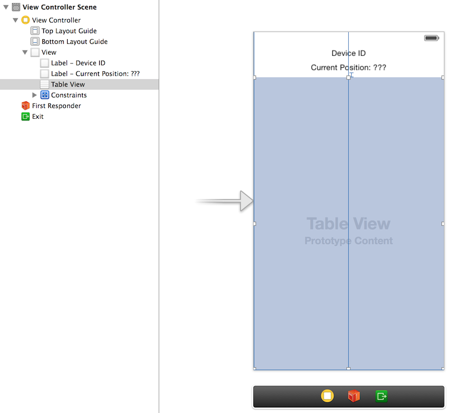
Add a Table View
From the Object library, drag a Table View Cell inside the Table View (see ).
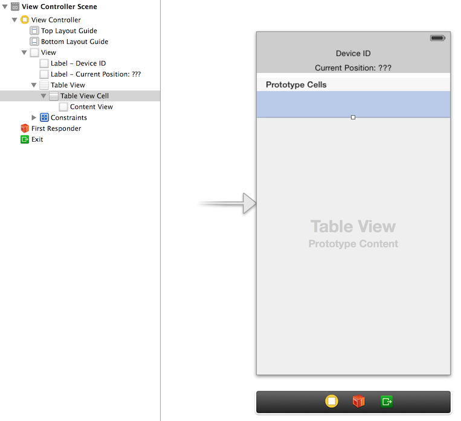
Add a Table View Cell
We will change the Table View Cell properties by setting its Style to Basic and its Identifier to TextCell ().
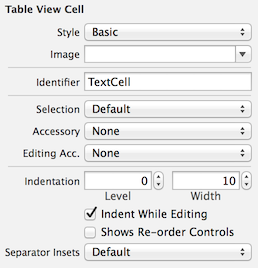
Edit the Table View Cell properties
The MWMViewController interface will be declared as both the data source and delegate of the table. Open the MWMViewController.m file, make the MWMViewController interface conform to the UITableViewDataSource and UITableViewDelegate protocols and add an outlet property for the table.
We need to bind this outlet property to the table view. Open the Main.storyboard and Ctrl-click on View Controller to see its connection panel. Drag from Table View the table to connect it. See
.
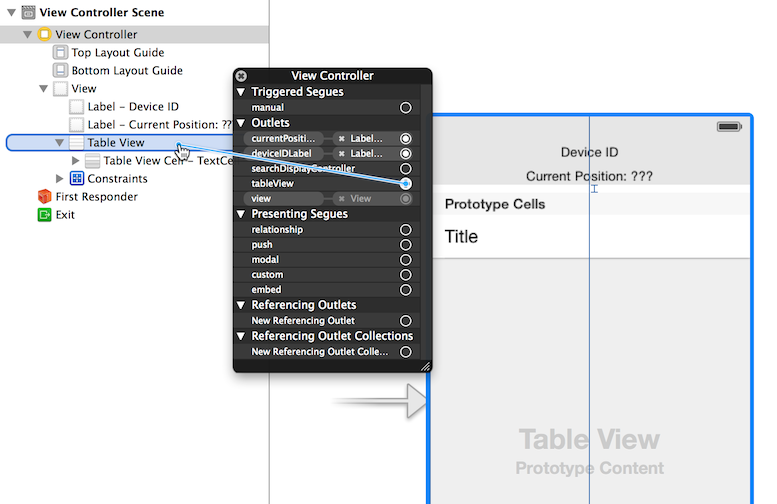
Connect the tableView outlet property to the Table View
We also need to connect the View Controller to the Table View and declare it as its dataSource and delegate.
Open the Main.storyboard and Ctrl-click on Table View to see its connection panel. Drag from dataSource to the View Controller to connect it ().
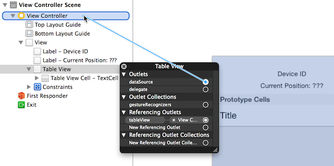
Connect the Table View's dataSource to the View Controller
We do the same operation to connect the Table View's delegate property to the View Controller ().
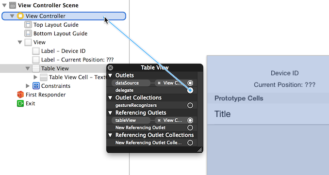
Connect the Table View's delegate property to the View Controller
The graphical objects are now properly connected to the properties. The next step is to make the MWMViewController implementation comply with the UITableViewDataSource and UITableViewDelegate protocols.
The table will only display the received text messages. As there is no interaction with the table, we do not need to add any methods from the UITableViewDelegate protocol. Let’s just add a comment to the MWMViewController implementation to remember this:
#pragma mark - UITableViewDelegate
// no delegate actions
The controller is also the dataSource of the table. We will keep a list of the texts in memory in an array. Let’s add a texts array to the MWMViewController implementation and instantiate it in its viewDidLoad method:
@implementation MWMViewController
// the texts are stored in an array of NSString
NSMutableArray *texts;
- (void)viewDidLoad
{
[super viewDidLoad];
self.deviceID = [UIDevice currentDevice].identifierForVendor.UUIDString;
NSLog(@"Device identifier is %@", self.deviceID);
self.client = [[STOMPClient alloc] initWithHost:kHost port:kPort];
texts = [[NSMutableArray alloc] init];
}
This texts array will be used as the source of data for the table. Let’s implement the required UITableViewDataSource methods:
#pragma mark - UITableViewDataSource protocol
- (NSInteger)tableView:(UITableView *)tableView
numberOfRowsInSection:(NSInteger)section
{
return [texts count];
}
- (UITableViewCell *)tableView:(UITableView *)tableView
cellForRowAtIndexPath:(NSIndexPath *)indexPath
{
// this identifier must be the same as the onethat was set in
// the Table View Cell properties in the storyboard
static NSString *CellIdentifier = @"TextCell";
UITableViewCell *cell = [tableView
dequeueReusableCellWithIdentifier:CellIdentifier];
cell.textLabel.text = [texts objectAtIndex:indexPath.row];
return cell;
}
With these methods implemented, the table will display all the texts that are stored in the texts array.
Receive STOMP Messages
Now that we are ready to display the table, the next step is to subscribe to the device’s text destination to consume STOMP messages and store their text payload in the texts array.
To consume messages, a STOMP client must:
Connect to the broker.
Subscribe to the destination from which it wants to consume messages.
Subscribe to a STOMP Destination
We already took care of the first step by calling STOMPClient's connectWithHeaders:completionHandler: in MWMViewController's connect method.
Step 2 is handled in StompKit by calling STOMPClient's subscribeTo:headers:messageHandler: method.
This method takes three parameters:
The destination that the client wants to consume from. In our case, it is the destination /queue/device.XXX.text (we prepended the destination with the /queue/ prefix according to the ActiveMQ naming convention).
A dictionary of headers to pass additional metadata to the connection process. Because we do not have any such header for the time being, we will pass an empty dictionary.
A STOMPMessageHandler block with a STOMPMessage parameter that will be called every time the broker sends a messages to the client to consume it. In our case, we just have to get the NSString text from the message body property and add it to the texts array.
We will add a method named subscribe to the MWMViewController implementation:
#pragma mark - Messaging
- (void)subscribe
{
// subscribes to the device text queue:
NSString *destination = [NSString stringWithFormat:@"/queue/device
.%@.text", self.deviceID];
NSLog(@"subscribing to %@", destination);
subscription = [self.client subscribeTo:destination
headers:@{}
messageHandler:^(STOMPMessage *message) {
// called every time a message is consumed from the destination
NSLog(@"received message %@", message);
// the text is sent in a plain string; we use it as is
NSString *text = message.body;
NSLog(@"adding text = %@", text);
[texts addObject:text];
// TODO reloads the table
}];
}
subscription is an object returned by the subscribe method, which identifies the STOMP subscription and that can be used to unsubscribe.
We declare this object in the MWMViewController's implementation:
We need to call this subscribe method as soon as the client is connected to the STOMP broker. The correct location is inside the completionHandler block of the connect method that will be called when the client is successfully connected to the STOMP broker:
#pragma mark - Messaging
- (void)connect
{
NSLog(@"Connecting...");
[self.client connectWithHeaders:@
{ @"client-id": self.deviceID}
completionHandler:^
(STOMPFrame *connectedFrame,
NSError *error) {
if (error) {
// we have not been able to connect to the broker
// let's log the error
NSLog(@"Error during connection: %@", error);
} else {
// we are connected to the STOMP broker
// without an error
NSLog(@"Connected");
[self subscribe];
}
}];
// when the method returns, we cannot assume that the client is connected
}
Unsubscribe from the Destination
The application will consume messages from the destination as long as it remains connected to the STOMP broker.
We do not need to explicitly unsubscribe from the destination when we disconnect from the broker, but it is a good practice to do so. To unsubscribe, we just need to call the unsubscribe method on the subscription object that was created when we subscribed to the text destination. We will unsubscribe just prior to disconnecting from the broker in the viewDidDisappear: method:
The application is now ready to consume messages. Let’s start it and check that it is working.
Run the application in the iOS simulator or on your device.
Go to the ActiveMQ admin console and browse to the device text destination (in my case, its name is device.2262EC25-E9FD-4578-BADE-4E113DE45934.text) and click on the Send tab.
As illustrated in , fill the text area with a plain-text string (e.g., "Hello, where are you?") and set the body format to Plain Text.
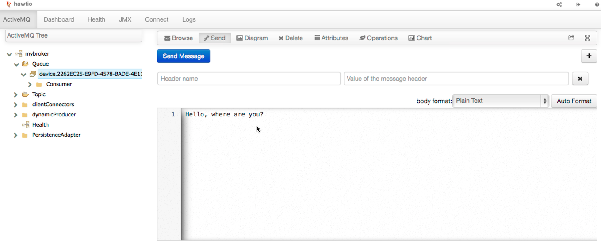
Send a message using the ActiveMQ Admin Console
Click on the Send Message button to send the message on the destination.
We see in the application log that a STOMP message has been received and that the text was extracted from the message’s body:
2014-03-14 14:24:19.807 Locations[86050:3903] received message MESSAGE
priority:0
destination:/queue/device.2262EC25-E9FD-4578-BADE-4E113DE45934.text
timestamp:1394803459806
message-id:ID\cjeff.local-53346-1394795959634-37\c1\c1\c1\c1
expires:0
subscription:sub-0
Hello, where are you?
2014-03-14 14:24:19.808 Locations[86050:3903] adding text = Hello, where are you?
However, nothing is displayed in the application. We forgot to reload the table to display the received orders.
Let’s fix that by calling reloadData on the tableView property from the STOMPMessageHandler block:
- (void)subscribe
{
// susbscribes to the device text queue:
NSString *destination = [NSString stringWithFormat:@"/queue/device.%@.text", self.deviceID];
NSLog(@"subscribing to %@", destination);
subscription = [self.client subscribeTo:destination
headers:@{}
messageHandler:^(STOMPMessage *message) {
// called every time a message is consumed from the destination
NSLog(@"received message %@", message);
// the text is sent in a plain string; we use it as is
NSString *text = message.body;
NSLog(@"adding text = %@", text);
[texts addObject:text];
dispatch_async(dispatch_get_main_queue(), ^{
[self.tableView reloadData];
});
}];
}
Note that we did not call directly [self.tableView reloadData]; from the STOMPMessageHandler block.
StompKit uses Grand Central Dispatch’s global queue to handle the communication between the client and the STOMP brokers. The STOMPMessageHandler block is called on that queue. However, any code that deals with UIKit (such as reloading the tableView) must be executed on the queue bound to the main thread. This is why we must wrap the reloadData call into a block executed on the main queue.
If we restart the application and send another message on the destination with the ActiveMQ admin console, the table will display the text as soon as it is received. See .
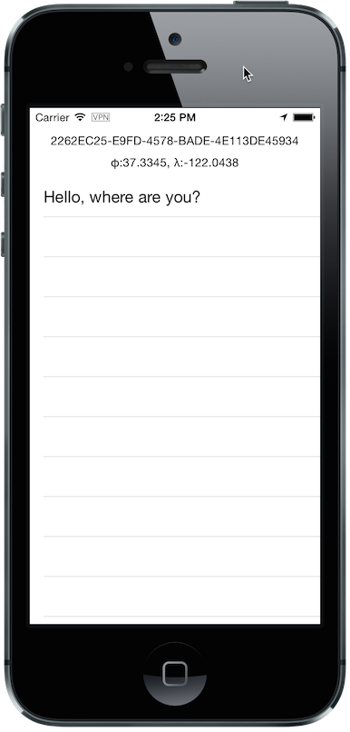
The received text is displayed in the table
Summary
In this chapter, we learned to use StompKit to send and receive STOMP messages from an iOS application.
To send a message, the application must do the following:
Connect to the STOMP broker.
Send the message to the destination.
To consume a message, the application must do the following:
Connect to the STOMP broker.
Subscribe to the destination and pass a block that is called every time a message is received. This block is executed on the Grand Central Dispatch global queue. If there is any code that changes the user interface, it must be wrapped in a block executed on the main queue.
We use two different types of message payloads:
A JSON payload by using its string representation for the message body and specifying application/json; charset=utf-8 in its content-type header
A simple plain-text payload without any content-type header
Sending and consuming messages is only possible when the client is successfully connected to the STOMP broker. Due to the event-driven design of StompKit, this is the case when the completionHandler block is executed without an error in connectWithHeaders:completionHandler:.